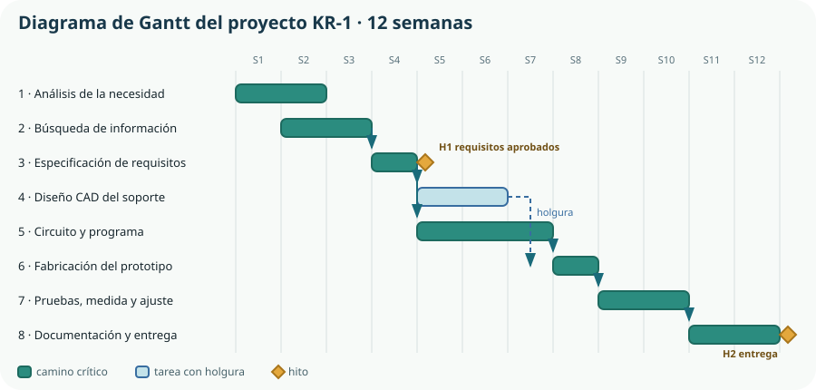

A lo largo de todo el Bloque A seguiremos un mismo proyecto: el KR-1, un kit de riego automatizado y monitorizado para el huerto escolar y, más adelante, para huertos urbanos. En este tema lo ponemos en marcha —investigación, ideas y plan de trabajo—; en el Tema 2 lo miraremos como producto con ciclo de vida y calidad; en el Tema 3 lo dibujaremos; y en el Tema 4 lo documentaremos y lo presentaremos. El objeto es un pretexto: el método sirve para cualquier proyecto de ingeniería.
- distinguir investigación, desarrollo e innovación, y decir qué resultados cabe esperar de cada una;
- buscar información técnica, valorar su procedencia y separar el dato de su interpretación;
- referenciar fuentes con rigor y reconocer qué constituye plagio;
- generar alternativas con técnicas de ideación y elegir una con criterios explícitos;
- descomponer un proyecto en tareas, secuenciarlas y representarlas en un diagrama de Gantt con hitos, dependencias y holguras;
- explicar en qué se diferencia una planificación en cascada de un desarrollo iterativo y qué aportan las metodologías ágiles;
- priorizar el alcance de una entrega y definir una solución mínima viable;
- asumir un rol dentro de un equipo, escuchar el razonamiento ajeno y contribuir al bienestar del grupo;
- tratar el error como información de proyecto y reevaluar una decisión sin vivirlo como fracaso.
1. Qué es un proyecto de investigación y desarrollo
En el lenguaje corriente, «investigar» significa buscar información y «desarrollar» significa construir algo. En ingeniería, las tres letras de I+D+i designan actividades distintas, con objetivos distintos y con resultados que se miden de forma distinta. Conviene separarlas desde el principio, porque de ello depende qué se considera un éxito del proyecto.
| Actividad | Qué persigue | En el KR-1 | Resultado esperado |
|---|---|---|---|
| Investigación | Ampliar el conocimiento disponible, sin una aplicación concreta decidida de antemano. | Medir cómo varía la humedad del sustrato con la temperatura y el riego en los bancales del centro. | Datos, gráficas y conclusiones: una respuesta a una pregunta que antes no teníamos. |
| Desarrollo | Aplicar el conocimiento a la creación de un producto, proceso o sistema nuevo o mejorado. | Diseñar el controlador, el soporte y el programa que abren la válvula cuando hace falta. | Un prototipo que funciona y su documentación técnica. |
| Innovación | Introducir el resultado en un uso real, de modo que aporte valor a alguien. | Que el instituto lo adopte, que se mantenga solo en verano y que otro centro pueda replicarlo. | Una solución en uso, con instrucciones, coste conocido y mantenimiento previsto. |
Las fases y lo que produce cada una
Un proyecto de ingeniería no es una sucesión de tareas sueltas: cada fase termina con un entregable que la siguiente necesita. Si una fase no produce nada revisable, es imposible saber si se ha terminado.
Comprender la necesidad, el entorno y las restricciones. Entregable: informe de necesidad con datos del huerto, tomas disponibles y personas implicadas.
Convertir la necesidad en requisitos verificables. Entregable: lista de requisitos priorizados, con su criterio de comprobación.
Decidir la solución: arquitectura, geometría, circuito y programa. Entregable: planos, esquemas y diagrama funcional.
Construir el prototipo con las técnicas elegidas. Entregable: prototipo físico y lista de materiales con costes reales.
Comprobar requisito por requisito, midiendo. Entregable: informe de pruebas con valores medidos y desviaciones.
Documentar, entregar, formar a quien lo usará y evaluar el propio proyecto. Entregable: memoria, manual y balance de lo aprendido.
2. Investigar: buscar, seleccionar e interpretar
El criterio de evaluación 1.1 pide investigar y diseñar proyectos «seleccionando, referenciando e interpretando información relacionada». Son tres verbos distintos y los tres se evalúan. Buscar es fácil; seleccionar exige criterio; interpretar exige entender qué dice el dato y qué no dice.
Dónde se busca información técnica
| Fuente | Qué aporta | Ejemplo para el KR-1 | Precaución |
|---|---|---|---|
| Hoja de características (datasheet) | Los valores garantizados por el fabricante de un componente. | Tensión de trabajo, consumo y rango del sensor de humedad. | Los valores «típicos» no son los «máximos»: hay que leer la columna correcta. |
| Norma técnica | Requisitos y métodos de ensayo acordados por un sector. | Grado de protección IP exigible a una caja instalada a la intemperie. | Suelen ser de pago; se citan por su código y año. |
| Documentación de patentes | Descripciones técnicas completas de soluciones ya inventadas. | Mecanismos de dosificación de agua ya patentados. | Una patente vigente no se puede copiar para explotarla, pero sí estudiar. |
| Artículo científico o informe oficial | Datos obtenidos con método y revisados por otros. | Necesidades hídricas de un cultivo en clima mediterráneo. | Comprobar la fecha y si el contexto es comparable al nuestro. |
| Medición propia | El dato de nuestro caso concreto, que nadie más tiene. | Humedad del bancal a las 8:00 y a las 16:00 durante dos semanas. | Anotar instrumento, unidades, procedimiento e incertidumbre. |
| Foro, vídeo o blog | Pistas rápidas, trucos de montaje y errores frecuentes. | Cómo se corroe un sensor de humedad resistivo. | No es fuente para justificar una decisión: sirve para orientar la búsqueda. |
Seleccionar: cuatro preguntas antes de dar por buena una fuente
- ¿Quién lo firma? Una persona u organización identificable, con competencia en el asunto y responsabilidad sobre lo que publica.
- ¿Cuándo se publicó? En tecnología, cinco años pueden dejar obsoleto un componente, un protocolo o un precio.
- ¿Con qué intención? Informar, enseñar, normalizar o vender. Un catálogo comercial es una fuente legítima para conocer especificaciones y precios, y una fuente sesgada para comparar alternativas.
- ¿Se puede contrastar? Si dos fuentes independientes coinciden, la confianza aumenta. Si una cifra solo aparece copiada de sitio en sitio sin origen, es una cifra huérfana.
Interpretar: el dato, su unidad y su límite
Interpretar es responder a «¿qué puedo afirmar con esto?». Tres errores aparecen sin falta en los primeros proyectos:
Confundir dato e interpretación
«El sensor marca 430» es un dato. «El sustrato está seco» es una interpretación, y depende de la calibración. El informe debe distinguir las dos cosas.
Extrapolar sin base
Dos días de medidas en marzo no permiten decidir el riego de agosto. Se puede decidir con ellas, pero declarando el margen de duda.
Perder la unidad
Un valor sin unidad no es información. «Consume 250» puede ser mA, mW o mL de agua por minuto, y cambia por completo el diseño.
3. Referenciar y no plagiar
Referenciar es indicar de dónde procede cada afirmación que no es tuya, de modo que otra persona pueda ir a comprobarla. No es un trámite burocrático: es lo que convierte una opinión en un argumento y lo que permite que un tercero repita tu trabajo. En ingeniería tiene además un efecto práctico inmediato: cuando el prototipo no funciona, las referencias son el mapa que te dice dónde volver a mirar.
Qué debe llevar una referencia
| Tipo | Elementos | Ejemplo abreviado |
|---|---|---|
| Página web | Autoría, título, entidad responsable, dirección y fecha de consulta. | Design Council. The Double Diamond. designcouncil.org.uk [consulta: 12-09-2026]. |
| Hoja de características | Fabricante, referencia exacta del componente, revisión del documento y año. | Espressif Systems. ESP32 Series Datasheet, v4.4, 2024. |
| Norma | Organismo, código completo y año de la versión. | UNE-EN 60529:1993 «Grados de protección IP». |
| Norma legal | Rango, número, fecha, título y boletín de publicación. | Decreto 64/2022, de 20 de julio (BOCM 26-07-2022). |
| Medición propia | Fecha, lugar, instrumento, procedimiento y responsable. | Medida de humedad, bancal 2, 03-10-2026, sonda capacitiva, equipo B. |
Existen estilos normalizados para ordenar esos elementos —la norma ISO 690 y su versión española UNE-ISO 690 son las más usadas en documentación técnica—. Para este curso basta con una regla: elige un estilo, sé coherente en todo el documento y no omitas nunca la fecha de consulta de un recurso en línea.
4. Ideación y Design Thinking
Con la necesidad comprendida y los datos en la mano hay que producir alternativas. La trampa habitual es llegar a esta fase con una sola idea —la primera que apareció— y dedicar el resto del proyecto a justificarla. El Design Thinking reúne un conjunto de modos de trabajo centrados en las personas que usarán la solución: comprender, definir, idear, prototipar y probar, empleados con flexibilidad y no como una receta en fila.[3]
Abrir y cerrar: divergencia y convergencia
El modelo del doble diamante del Design Council describe dos movimientos consecutivos de apertura y cierre: primero se explora el problema y se concreta su definición; después se exploran muchas respuestas y se concreta una.[4] Las dos mitades necesitan maneras de pensar opuestas, y mezclarlas es la causa más común de que una sesión de ideas no produzca nada.
Pensamiento divergente
Busca cantidad y variedad. Se aplaza el juicio, se admiten propuestas improbables y se construye sobre las ideas ajenas. Criticar aquí mata la sesión.
Pensamiento convergente
Agrupa, compara y descarta con criterios explícitos: requisitos, coste, tiempo, seguridad y sostenibilidad. Decidir aquí sin criterios escritos es votar por simpatía.
Cinco técnicas de ideación que funcionan en clase
- Brainwriting: cada persona escribe o dibuja sus propuestas en silencio antes de compartirlas. Evita que la sesión la dominen las dos voces más rápidas.
- Ideación por funciones: descomponer el sistema en funciones —medir, decidir, abrir el paso del agua, avisar, alimentarse de energía— y generar alternativas para cada una por separado. Después se combinan.
- Matriz morfológica: una tabla con una función por fila y sus alternativas por columna. Cada recorrido por la tabla es una solución candidata distinta, y aparecen combinaciones que nadie habría propuesto entera.
- Analogía: preguntar cómo resuelve un problema parecido un gotero de hospital, una cisterna de inodoro o una cafetera. Las soluciones maduras de otro campo son ideas gratis.
- Hipótesis extrema: «¿y si no hubiera electricidad?», «¿y si nadie pudiera venir en tres semanas?». No se fabrica el extremo: se extrae el principio que aparece al pensarlo.
Cerrar: elegir con una matriz de decisión
Para converger, se puntúa cada alternativa frente a los criterios que importan y se pondera cada criterio según su peso. El resultado no decide por ti, pero obliga a que la decisión sea explicable.
| Criterio | Peso | A. Temporizador | B. Sonda capacitiva + electroválvula | C. Gotero por gravedad + servo |
|---|---|---|---|---|
| Ahorro de agua | 0,30 | 2 | 5 | 4 |
| Fiabilidad en verano | 0,25 | 4 | 3 | 4 |
| Coste del material | 0,20 | 5 | 3 | 4 |
| Valor didáctico | 0,15 | 1 | 5 | 3 |
| Facilidad de mantenimiento | 0,10 | 5 | 3 | 3 |
| Total ponderado | 1,00 | 3,15 | 3,85 | 3,75 |
5. Planificar: identificar tareas, secuenciarlas y dibujarlas
Planificar es convertir una intención en un compromiso comprobable. El currículo lo concreta en tres pasos: identificación de tareas, secuenciación y diagramas de Gantt con seguimiento. Se hacen en ese orden, y saltarse el primero es la causa habitual de que un proyecto escolar se entregue a medias.
Identificar: descomponer hasta poder estimar
Una tarea está bien definida cuando tiene un responsable, un entregable y una duración estimable. «Hacer el circuito» no cumple ninguna de las tres. «Montar y medir el divisor de tensión del sensor en placa de pruebas, con acta de medidas» cumple las tres. La regla práctica: si no eres capaz de estimar cuánto durará, la tarea todavía es demasiado grande.
Secuenciar: qué depende de qué
| # | Tarea | Duración | Depende de | Entregable |
|---|---|---|---|---|
| 1 | Análisis de la necesidad y del entorno | 2 semanas | — | Informe de necesidad |
| 2 | Búsqueda, selección y referenciación de información | 2 semanas | 1 (parcial) | Dosier de fuentes |
| 3 | Especificación de requisitos | 1 semana | 2 | Lista de requisitos priorizada |
| 4 | Diseño CAD del soporte y de la caja | 2 semanas | 3 | Planos y modelo 3D |
| 5 | Circuito de control y programa | 3 semanas | 3 | Esquema y programa probado |
| 6 | Fabricación del prototipo | 1 semana | 4 y 5 | Prototipo y lista de materiales |
| 7 | Pruebas, medida y ajuste | 2 semanas | 6 | Informe de pruebas |
| 8 | Documentación y presentación | 2 semanas | 7 | Memoria y presentación |
Dibujar: el diagrama de Gantt
Un diagrama de Gantt coloca las tareas en filas y el tiempo en columnas, de modo que la longitud de cada barra es su duración y su posición, su fecha. Añadiendo las dependencias se ve de un golpe de vista qué tareas pueden retrasarse sin daño y qué tareas arrastran a todo el proyecto.

6. Metodologías ágiles
El Gantt supone que se puede definir todo al principio y ejecutarlo después. Eso funciona cuando se sabe lo que hay que hacer —construir un muro— y falla cuando hay incertidumbre técnica, que es la situación normal en I+D. Las metodologías ágiles nacieron para eso: en lugar de una entrega al final, muchas entregas pequeñas, cada una probada con quien va a usarla.
Planificación en cascada
Fases completas y consecutivas, una entrega final. Bueno cuando los requisitos son estables. Riesgo: el error se descubre al final, cuando corregirlo cuesta todo el proyecto.
Desarrollo iterativo y ágil
Ciclos cortos que terminan en algo que funciona, aunque incompleto. Bueno cuando hay que aprender mientras se construye. Riesgo: sin disciplina de cierre, se convierte en improvisar.
El texto que dio nombre al movimiento, el Manifiesto por el desarrollo ágil de software, se resume en cuatro preferencias: las personas y su interacción sobre los procesos; el producto que funciona sobre la documentación exhaustiva; la colaboración con el cliente sobre la negociación del contrato; y la respuesta al cambio sobre el seguimiento de un plan.[5] Obsérvese que dice «sobre», no «en lugar de»: la documentación y el plan siguen siendo necesarios.
Cómo se organiza una iteración
Lista única y ordenada de todo lo que falta, escrita en términos de valor para quien usará el sistema: «que avise al móvil si el depósito se vacía».
El equipo toma de la pila lo que se compromete a terminar en esta iteración —dos o tres semanas— y no más.
Reunión breve y diaria o semanal: qué he terminado, qué voy a hacer, qué me bloquea. El tablero con columnas por hacer, en curso y hecho hace visible el trabajo.
Se muestra lo que funciona a quien lo va a usar —el profesorado del huerto— y se recoge lo que dice. Aquí se descubre lo que ninguna reunión interna habría descubierto.
El equipo revisa su propia forma de trabajar y elige una mejora concreta para la iteración siguiente. Una, no diez.
Los marcos ágiles más extendidos, como Scrum, formalizan estos elementos con roles y reuniones definidas.[6] En un proyecto de aula basta con conservar lo esencial: una pila ordenada, iteraciones con fecha, un tablero visible y una retrospectiva honesta.
Priorizar: qué entra en la primera versión
Si todo es importante, nada se termina. Una técnica sencilla de priorización clasifica cada requisito en cuatro grupos —imprescindible, importante, deseable y descartado por ahora—, con la condición de que el primer grupo no supere la mitad del esfuerzo disponible.
| Prioridad | Requisito | Por qué |
|---|---|---|
| Imprescindible | Regar según la humedad medida y cerrar el paso del agua si el sensor falla. | Sin esto no hay producto, y un fallo abierto inunda el huerto. |
| Importante | Registrar las lecturas para poder revisarlas después. | Necesario para ajustar el sistema, pero el riego funciona sin ello. |
| Deseable | Consultar el estado del huerto desde el móvil. | Aporta mucho valor percibido; entra si sobra tiempo en la iteración 3. |
| Por ahora, no | Predecir el riego con datos meteorológicos. | Interesante y fuera de alcance en doce semanas. Se anota para el futuro. |
7. El equipo: roles, escucha y acuerdos
El criterio 1.3 no evalúa la simpatía del grupo: evalúa colaborar «escuchando el razonamiento de los demás, aportando al equipo a través del rol asignado y fomentando el bienestar grupal y las relaciones saludables e inclusivas». Son tres conductas observables, y las tres se aprenden.
| Rol | De qué responde | Qué entrega cada semana |
|---|---|---|
| Coordinación | Que el plan esté actualizado y que los bloqueos se resuelvan o se comuniquen. | Tablero al día y lista de bloqueos. |
| Documentación | Que lo decidido quede escrito con sus razones y sus fuentes. | Acta breve de decisiones y dosier de fuentes. |
| Diseño técnico | Que los planos, esquemas y modelos sean coherentes entre sí. | Versión fechada de planos y esquemas. |
| Fabricación y ensayo | Que el prototipo se construya con seguridad y que las medidas se anoten. | Registro de montaje y acta de medidas. |
| Calidad | Que cada requisito tenga una prueba y que se compruebe de verdad. | Tabla de requisitos con su estado. |
Escuchar el razonamiento, no solo la conclusión
En una discusión técnica lo que importa no es qué defiende cada cual, sino por qué. Dos hábitos cambian por completo la calidad de las decisiones de un equipo:
- Reformular antes de responder: «entiendo que prefieres la sonda capacitiva porque la resistiva se corroe, ¿es eso?». Si la reformulación es correcta, la discusión avanza; si no, acabas de evitar media hora de malentendido.
- Separar la idea de quien la propone: se descartan propuestas, no personas. Y quien propone una alternativa no está atacando a nadie: está haciendo su trabajo.
Acuerdos de equipo: cuatro decisiones que evitan casi todos los conflictos
- Dónde vive la información. Una única carpeta compartida, con una convención de nombres de archivo y de versiones acordada el primer día.
- Cómo se decide. Por consenso razonado y, si no lo hay en quince minutos, con el criterio del rol responsable de ese asunto, dejándolo anotado.
- Cuándo se responde. Un compromiso realista de respuesta fuera de clase, para que nadie quede bloqueado un fin de semana entero.
- Qué se hace si alguien no entrega. Se habla en la siguiente reunión, se replanifica y se avisa al profesorado si se repite. Ni se tapa ni se reparte el trabajo en silencio.
8. Iniciativa, perseverancia y el error como información
El currículo incluye entre los contenidos del bloque el emprendimiento, la perseverancia, la creatividad, la autoconfianza, la iniciativa y «el error y la reevaluación como parte del proceso de aprendizaje y como herramienta para la mejora de los proyectos». No son adornos: son las conductas que distinguen un proyecto que llega a funcionar de uno que se queda a medias.
Emprendimiento
Detectar una oportunidad y movilizar recursos para aprovecharla. No significa montar una empresa: significa ser quien dice «esto se puede resolver» y da el primer paso.
Iniciativa
Empezar sin que te lo pidan y sin esperar instrucciones completas. En un proyecto, la información nunca está completa: se avanza y se corrige.
Perseverancia
Sostener el esfuerzo cuando el prototipo falla por cuarta vez. La mayor parte del trabajo de ingeniería ocurre después del primer intento.
Autoconfianza
Confiar en que puedes aprender lo que aún no sabes. Se construye con evidencias pequeñas: un circuito que mide, un programa que arranca.
Reevaluar: el error como dato de proyecto
Un prototipo que falla no es un accidente: es la respuesta a una pregunta que el equipo había planteado sin saberlo. Convertir ese fallo en información exige tratarlo con método, igual que una medida.
| Qué ocurrió | Qué hipótesis cae | Qué se decide |
|---|---|---|
| El sensor da lecturas distintas cada mañana. | «Una sola medida basta para decidir el riego.» | Promediar varias lecturas y registrar la hora de cada una. |
| La válvula no cierra al cortar la alimentación. | «Si falla la corriente, el sistema queda seguro.» | Elegir una válvula normalmente cerrada. Requisito de seguridad nuevo. |
| La caja impresa se deforma al sol. | «El material del prototipo sirve para la versión final.» | Revisar el material en el Tema 5 y proteger la caja de la radiación directa. |
| Nadie sabe usarlo cuando falta el equipo. | «Con que funcione, basta.» | Añadir manual de una página al alcance de la entrega. |
Comprueba lo que has aprendido
Este tema no se demuestra recitando las fases de un proyecto, sino mostrando el rastro que deja un equipo que trabaja con método.
| Aspecto | Qué debes demostrar | Evidencias posibles |
|---|---|---|
| Investigar y referenciar | Que has seleccionado fuentes pertinentes, las has interpretado y las has citado de forma que otra persona pueda comprobarlas. | Dosier de fuentes con autoría y fecha, tabla de datos con unidades e instrumento, distinción explícita entre dato e interpretación. |
| Idear y decidir | Que has generado alternativas diversas y has elegido una con criterios escritos, no por descarte perezoso. | Matriz morfológica, tres alternativas desarrolladas, matriz de decisión ponderada y una frase que explique la elección. |
| Planificar y seguir | Que el proyecto tiene tareas con responsable y entregable, un Gantt con hitos y dependencias, y un seguimiento semanal real. | Tabla de tareas, diagrama de Gantt, tablero de iteración y actas breves con los desvíos detectados. |
| Colaborar | Que hay roles asignados y rotados, decisiones registradas y una gestión honesta de los desacuerdos. | Reparto de roles por iteración, acuerdos de equipo, actas de decisión y retrospectivas con una mejora concreta. |
Prueba final antes de entregar: dale tu documentación a alguien de otro equipo y pídele que reconstruya el camino. Si no puede explicar por qué elegisteis la sonda capacitiva, la culpa no es suya.
Glosario del tema
- Camino crítico
- Cadena más larga de tareas dependientes de un proyecto; determina su duración mínima y sus tareas no admiten retraso.
- Dependencia
- Relación por la que una tarea no puede empezar o terminar hasta que otra alcanza un estado determinado.
- Design Thinking
- Conjunto flexible de modos de trabajo centrados en las personas para comprender un problema, definirlo, idear, prototipar y probar.
- Diagrama de Gantt
- Representación del plan de un proyecto con las tareas en filas y el tiempo en columnas, donde la longitud de cada barra es su duración.
- Entregable
- Resultado concreto y revisable que produce una tarea o una fase.
- Especificación
- Documento que recoge los requisitos que la solución debe cumplir y cómo se comprobará cada uno.
- Estado de la técnica
- Conjunto de lo ya publicado sobre un problema técnico; se revisa antes de diseñar y antes de conceder una patente.
- Hito
- Punto del plan, sin duración, en el que se comprueba un avance y se decide continuar o rectificar.
- Holgura
- Tiempo que una tarea puede retrasarse sin afectar a la fecha de entrega del proyecto.
- I+D+i
- Investigación, desarrollo e innovación: generar conocimiento nuevo, aplicarlo a una solución y ponerla en uso real.
- Iteración
- Ciclo corto de trabajo que termina en un resultado utilizable y en lo aprendido que modifica el ciclo siguiente.
- Matriz de decisión
- Tabla que puntúa cada alternativa frente a criterios ponderados para hacer explícita la elección.
- Matriz morfológica
- Tabla de funciones y alternativas cuya combinación genera sistemáticamente soluciones candidatas.
- Patente
- Derecho de explotación exclusiva de una invención durante un tiempo limitado, concedido a cambio de publicar su descripción.
- Pila de trabajo
- Lista única y ordenada de lo que falta por hacer, expresada en términos de valor para quien usará el sistema.
- Plagio
- Presentar como propio un texto, imagen, plano, dato o código ajeno, con o sin modificaciones.
- Referencia
- Conjunto de datos que identifican una fuente y permiten localizarla y comprobarla.
- Requisito
- Condición que la solución debe cumplir, redactada de modo que pueda comprobarse.
- Retrospectiva
- Reunión en la que un equipo revisa su forma de trabajar y elige una mejora para la iteración siguiente.
- Solución mínima viable
- Versión más reducida que ya satisface la necesidad y permite probarla con personas reales.
- Trazabilidad
- Posibilidad de seguir el rastro que une una característica de la solución con su requisito, su necesidad y su evidencia.
- Validación
- Comprobación de que la solución responde a la necesidad real.
- Verificación
- Comprobación de que la solución cumple los requisitos especificados.
Resumen esencial
- Investigación genera conocimiento, desarrollo lo convierte en una solución e innovación la pone en uso real; se reconoce I+D cuando hay novedad apreciable e incertidumbre técnica que resolver.
- Cada fase de un proyecto debe terminar en un entregable revisable; sin entregable no se sabe si la fase ha terminado.
- Verificar es comprobar los requisitos; validar es comprobar que esos requisitos resolvían la necesidad.
- Investigar son tres verbos distintos: buscar, seleccionar con criterio e interpretar declarando unidades y límites.
- Referenciar convierte una opinión en un argumento; un dato sin origen comprobable no sostiene una decisión y un texto ajeno sin cita es plagio.
- La ideación necesita divergir antes de converger: primero cantidad y variedad, después criterios explícitos y ponderados.
- La matriz morfológica convierte la ideación en trabajo sistemático, y la matriz de decisión obliga a que la elección sea explicable.
- Planificar es identificar tareas con responsable, entregable y duración; secuenciarlas por dependencias; y representarlas en un Gantt con hitos, camino crítico y holguras.
- El valor del plan está en detectar desvíos a tiempo, no en acertar la predicción.
- Las metodologías ágiles responden a la incertidumbre con iteraciones cortas que terminan en algo que funciona, pila de trabajo priorizada, seguimiento visible y retrospectiva.
- Una solución mínima viable es la versión más pequeña que ya resuelve la necesidad y puede probarse de verdad.
- Colaborar es asumir un rol, escuchar el razonamiento ajeno y cuidar que el equipo pueda decir en voz alta que algo va mal.
- El error es información de proyecto: cada fallo relevante invalida una hipótesis y genera una decisión anotada.
Fuentes y recursos fiables
- [1] Eurostat — Glosario: investigación y desarrollo (I+D) (en inglés). Definición estadística basada en el Manual de Frascati de la OCDE.
- [2] Oficina Española de Patentes y Marcas — Invenciones: patentes y modelos de utilidad.
- [3] Stanford d.school — Design Thinking Bootleg (en inglés).
- [4] Design Council — The Double Diamond (en inglés).
- [5] Manifiesto por el desarrollo ágil de software (versión en español).
- [6] Schwaber, K. y Sutherland, J. — The Scrum Guide (en inglés; hay traducción al español en el mismo sitio).
- [7] Comisión Europea — Metodología de gestión de proyectos PM² (en inglés).
- [8] Organización Mundial de la Propiedad Intelectual — Patentes.
- [9] Decreto 64/2022, de 20 de julio (BOCM). Currículo de Tecnología e Ingeniería I, bloque A y competencia específica 1.